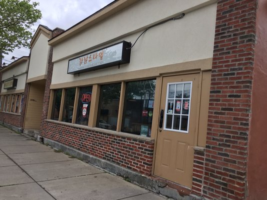

Secret Garden
Recommended dishes: Soon Doo Boo Jji Gae / Bi Bim Bab / Jja Jahng Myun
Address: 2731 Erie Blvd E, Syracuse, NY 13210
Contact: (315) 449-3333
Pickup hours: 11:30 AM – 8:30 PM
Delivery hours: 11:30 AM – 8:30 PM

Gangnam Style Kitchen
Recommended dishes: Gamja Tang / Ojingeo Bokkeum / Tteok Mandu Soup
Address: 115 Harvard Pl, Syracuse, NY 13210
Contact: (315) 422-1219
Pickup hours: 11:00 AM - 11:00 PM
Delivery hours: 11:00 AM - 11:00 PM